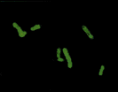
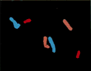
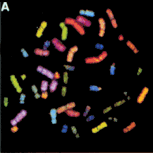
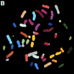
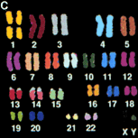

|  | In the image to the left, three different flourescent dyes were added to the chromosomes. An interferometer filtered the emitted light, sending a signal to a camera that created a digital image. For fluorescent dyes that have overlapping spectra, such as these, the display colors can still be quite similar (in the image to the left all 6 of these chromosomes appear "green"). Although to the human eye these appear to be the same color, subtle differences in their wavelengths can be detected by the interferometer. |
|  | As long as the spectral values for the display colors of the chromosomes differ by at least 15 nm, chromosomes can be distinguished from one another based on their spectra. With the spectral characteristics of each pair of chromosomes characterized, the computer assigns new colors to the different chromosomes. By recoloring the chromosomes, the problem of overlapping emission spectra seen in first image on this page is resolved. These new colors are referred to as classification colors because they enable classification of the chromosomes into a karyotype. |
|  |  |  |
| Display colors for the human Karyotype. |
Classification colors permitting better discrimination. |
The human spectral karyotype |


http://www.biology.arizona.edu
All contents copyright © 1996. All rights reserved.